Peak Hour User Manual
PEAK HOUR turns your music folders and DJ libraries into ready-to-play sets, and works alongside Serato DJ Pro, VirtualDJ and djay Pro on Windows. This manual walks through every part of it, step by step.
For PEAK HOUR 1.0.5 for Windows · Last updated 1 November 2026Install & first start
Install PEAK HOUR
- Double-click PEAK HOUR Setup 1.0.5-win.exe. No administrator rights are needed.
- If Windows shows "Windows protected your PC", click More info, then Run anyway. Windows shows this because PEAK HOUR is not yet signed with a publisher certificate.
- A black PEAK HOUR Setup window unpacks the program and shows a progress bar. This takes a minute or two.
- When you see "PEAK HOUR is installed", click OK. Open PEAK HOUR from the Start menu or the new desktop icon.
PEAK HOUR opens in its own Microsoft Edge window, with no tabs or address bar, separate from your everyday browsing. To use Google Chrome instead, see Use Chrome instead of Edge. Closing the window closes PEAK HOUR.
| What | Where it lives |
|---|---|
| The program | %LOCALAPPDATA%\Programs\PEAK HOUR |
| Your PEAK HOUR data (library, playlists, settings, backups) | %LOCALAPPDATA%\AXIOM DJ |
| Your set recordings | Music\AXIOM DJ\Recordings (you can change this in Settings) |
To remove PEAK HOUR, open Windows Settings → Apps, choose PEAK HOUR and click Uninstall. Your music and your PEAK HOUR data folder are left in place.
The welcome tour
The first time PEAK HOUR opens, a short tour introduces each area. Click Next to go through it, or Skip Tour. You can watch it again any time from Settings → System → App Walkthrough → Launch Walkthrough. Most pages also have a red ? button with a guide for that page.
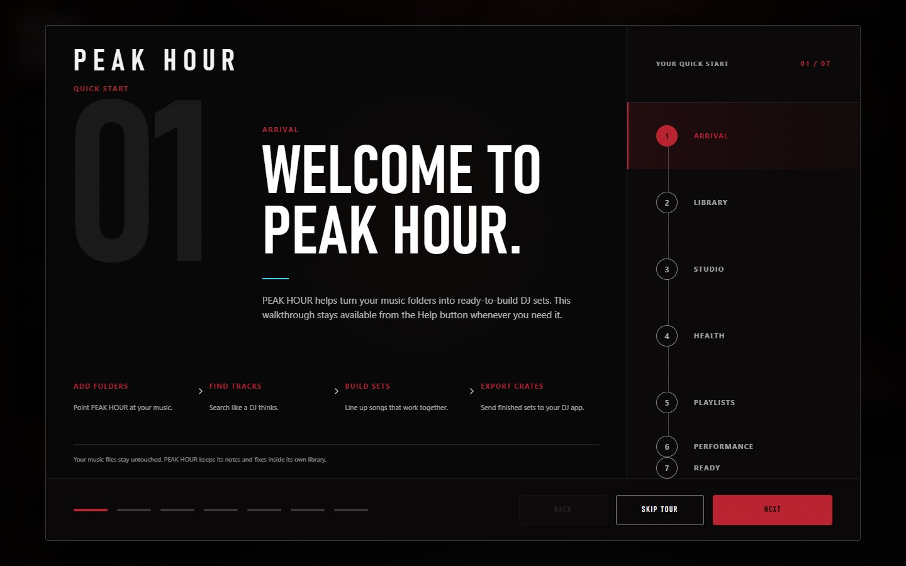
Getting around
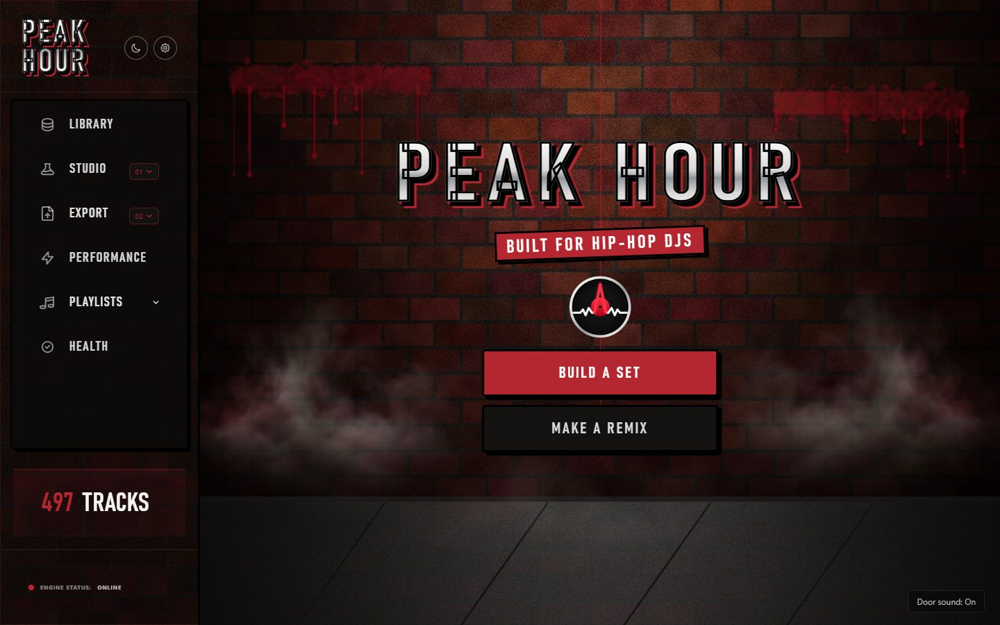
| Part of the screen | What it does |
|---|---|
| Library | All your songs and videos: search, sort, preview and pick songs. |
| Studio 01 | Build and order a set. The small 01 menu opens the Studio DAW and saved DAW projects. |
| Export 02 | Send the current set to Serato, djay or VirtualDJ. |
| Performance | Your live screen: what's playing, what to play next, recording and session notes. |
| Playlists | Saved sets (crates), Build Set From CSV and your Favourites. |
| Health | Find and fix missing BPM, key and years, duplicates, missing files and beat grids. |
| Tracks counter | How many tracks are in your library. Drop a music folder on it to add music. |
| Moon button | Switches between the night (dark) and day (light) look. |
| Gear button | Opens Settings. |
| Player bar (bottom) | Plays the song you preview: play/pause, 15s back, 30s forward, + Add to set, Autoplay and volume. |
Each page carries a hip-hop region sticker under the menu: Library is East Coast, Studio West Coast, Performance Dirty South, Playlists Texas and Health Midwest.
The start screen asks how you want to begin: Build a fresh set (start from a room brief such as Wedding, Family-friendly, Open format or Global) or Not sure what to play? (answer a few quick questions and PEAK HOUR suggests a direction and songs to start with).
Back to top ↑Adding your music
- Click ADD YOUR MUSIC under the menu, or Choose Music Source at the top of Library, or Settings → Add Music Library.
- Pick where your music comes from:
- Music Folder: any folder on this PC or an external drive. Click Select Music Folder and choose the folder in the Windows window.
- Serato Database V2: brings in your Serato crates, BPM, key, year, cues and history. Click Select Database V2 and choose the
_Serato_folder'sdatabase V2file. - VirtualDJ Library: brings in title, artist, BPM, key, year and cues from every drive. Click Connect VirtualDJ.
- The Adding music window shows two steps: Step 1 of 2: finding your music, then Step 2 of 2: reading track details (BPM, key, year), with a percentage and track count.
- You don't have to wait. Click Hide progress to keep working; a thin progress meter stays at the top of the window until the import finishes.
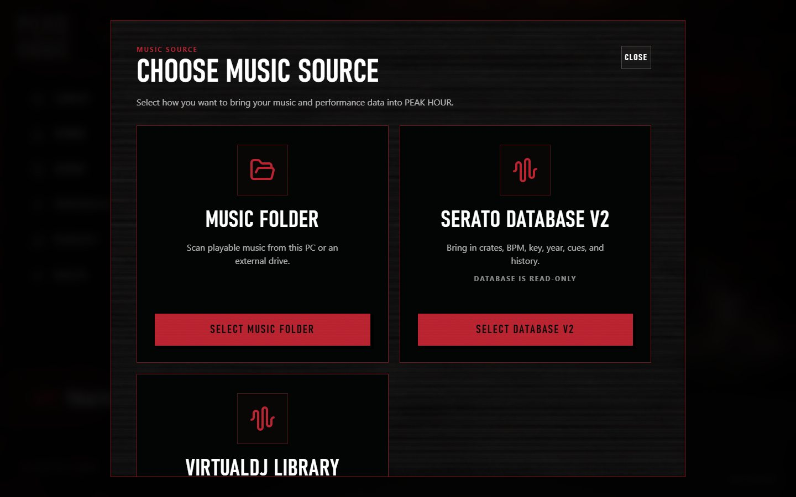
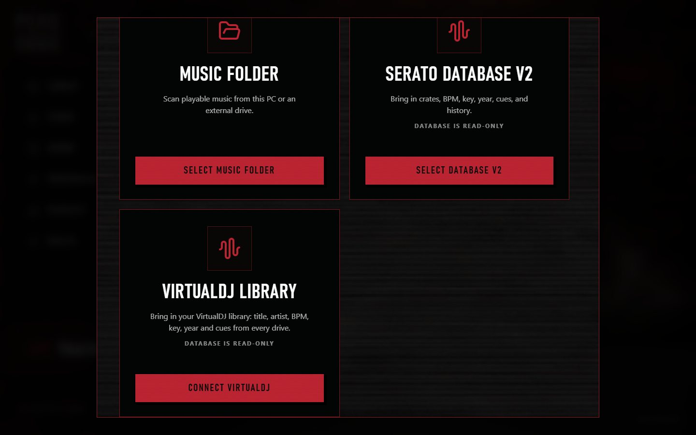
Rescan Library (in Settings) refreshes PEAK HOUR after you add, move or reconnect music folders. It keeps your videos and removes only songs whose files are really gone.
Back to top ↑Library
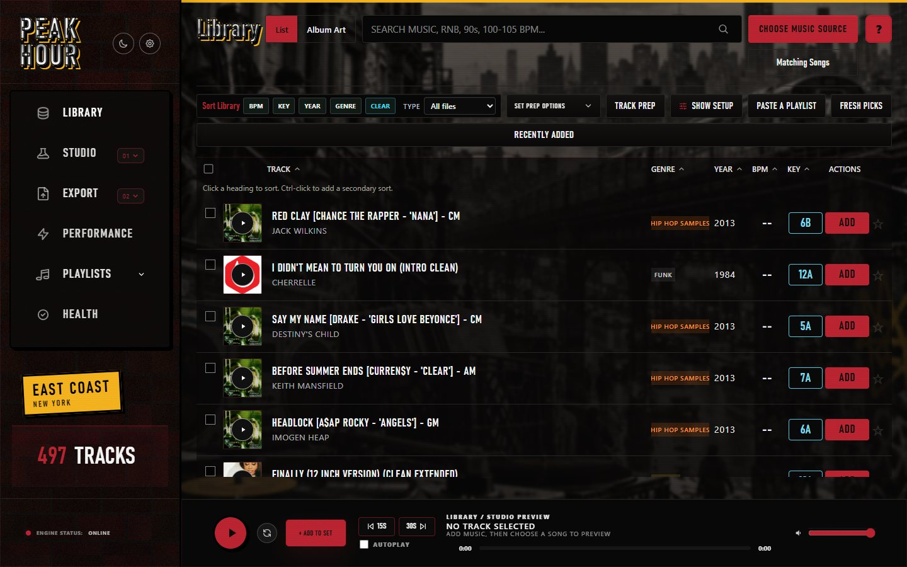
Find songs
- Search: type an artist, title, genre, era or tempo. Examples:
RNB,90s,100-105 BPM. - List / Album Art: switch between the track list and a cover-art grid.
- Sort Library: BPM, Key, Year, Genre, or Clear. You can also click a column heading; Ctrl-click a second heading to sort by both.
- Recently Added shows your newest songs first. Fresh Picks shuffles in a new selection of songs to try.
Show only one kind of file (Type)
Next to Sort Library, the Type list separates your files by kind:
- All files: everything.
- All audio or All video: just songs, or just music videos.
- One format, such as MP3, WAV, M4A, MP4, VOB or AVI. Each shows how many you have, and only formats in your library are listed.
The list, search and counts all follow your choice, and PEAK HOUR remembers it next time.
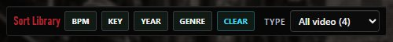
Each track row
- Play (on the cover): previews the song in the player bar. Video tracks open the video window.
- Key (for example 8A): the song's key in Camelot notation. Find means the key is missing; click it to prepare the song.
- ADD: adds the song to your Studio set.
- Star: adds it to your Favourites.
- The tick box on the left selects several songs at once.
If you add a song that has no BPM yet, PEAK HOUR offers to Prepare this track. Click Prepare & Add: the song goes into your set and its BPM is worked out in the background. Only PEAK HOUR's own notes change; the audio file stays untouched.
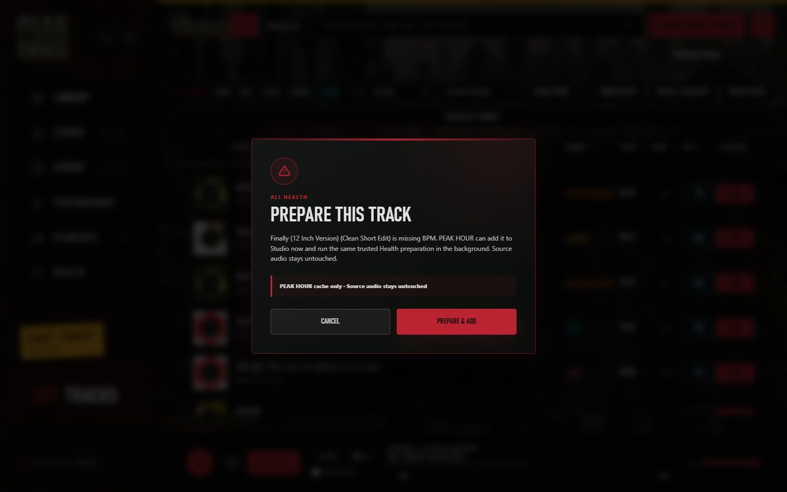
Library tools
| Button | What it does |
|---|---|
| Track Prep | Lists songs missing BPM, key or year. Scan + Update Missing Metadata fills them in. Back to Library returns. |
| Show Setup | Choose BPM, era, music style and room settings (Vibe, Room, Range) so the list matches the gig. Hide Setup closes them. |
| Set Prep Options | Narrows the list for the set you're preparing: All, Best Fits, Singalong (records people know), Dancefloor Ready, Peak Party or Final Run (a strong finish). |
| Paste a Playlist | Paste a song list, upload a file, or use a Spotify, Apple Music or YouTube link. Check My Library shows which songs you own, which need review and which are missing. |
| Matching Songs | Opens a side panel of songs that mix well with the one you're previewing. |
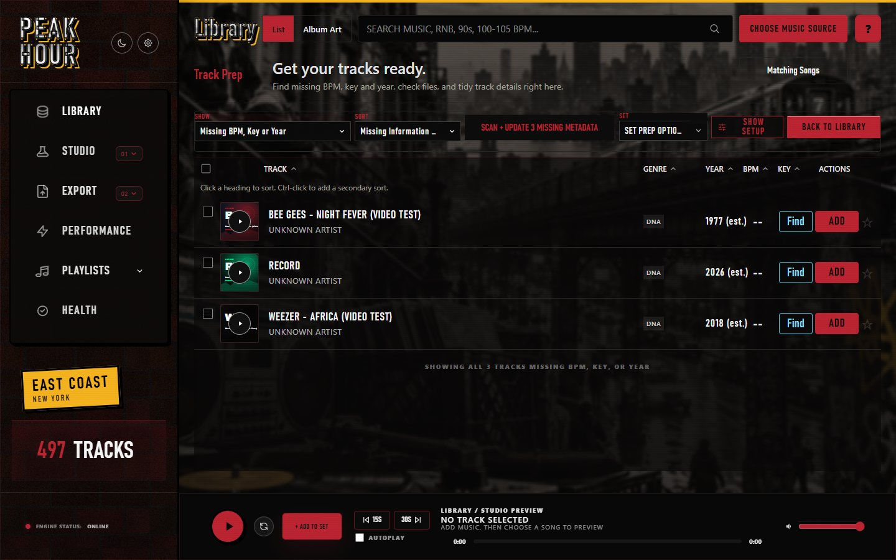
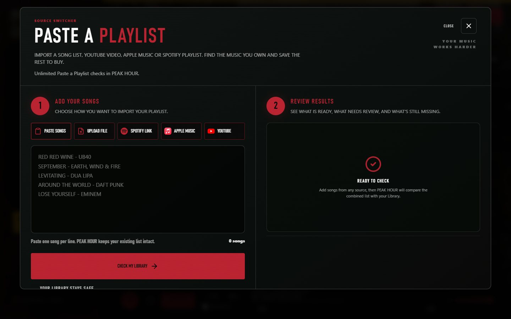
Video tracks
Click play on a video track (MP4, M4V, MOV, AVI, VOB, MPG and so on) and it opens in the video window.
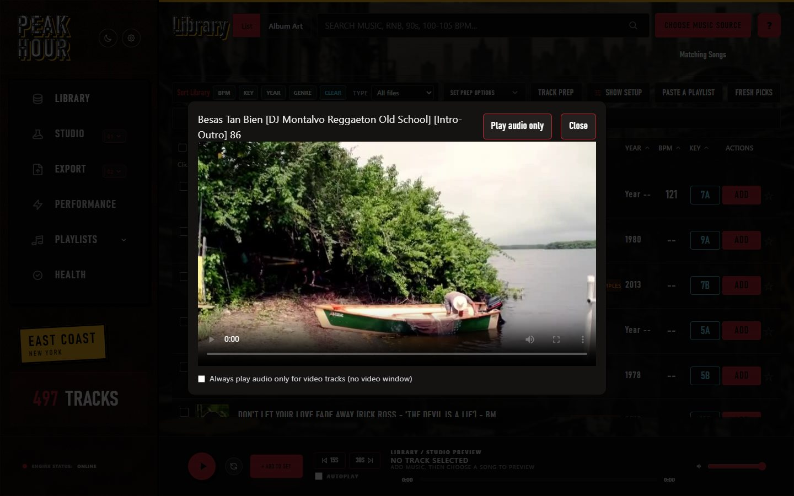
- Most music videos (MP4) start in about 3 seconds, straight from your drive. The first one after plugging in a USB drive can take a few seconds longer while the drive wakes up.
- Older formats such as VOB, AVI and MPEG are converted first. The window says "Converting this video so it can play… this can take a minute."
- If a video can't play directly, PEAK HOUR converts it automatically.
Play just the sound
- For one video: click Play audio only in the video window. The video closes and its sound plays in the normal player in under a second.
- For every video: tick Always play audio only for video tracks at the bottom of the video window, or turn on Settings → Library & Data → Play Video Tracks As Audio Only. Video tracks then skip the video window entirely. Turn it off the same way.
To see only your videos, set the Library's Type list to All video.
Back to top ↑Studio: building a set
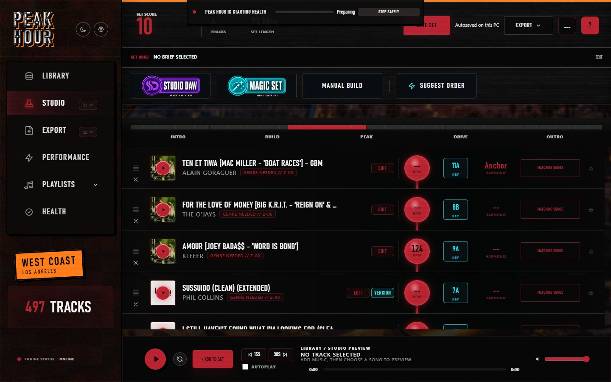
Build a set by hand
- In Library, click ADD on each song you want (or preview it and click + Add to set in the player bar).
- Open Studio. Drag songs by the handle on the left to reorder them, or click Suggest Order to let PEAK HOUR order them for smooth mixing.
- Use the × to remove a song, Edit to change its details, Version to swap to another version (clean, intro, extended), and Matching Songs to find a song that fits next.
- Click Save Set. Studio also autosaves on this PC while you work.
The top bar shows the Set Score (how well the songs flow), the number of tracks and the set length. Set Brief → Edit describes the gig so suggestions fit it.
Let PEAK HOUR build it: Magic Set
- In Studio, click Magic Set.
- Choose the Duration, the Avg Mix length and the BPM range (start and end).
- Name the timeline sections if you like (Warm up, Halfway there, End of set) and add a + Mid Point.
- Click Generate Set, or Build Around These Tracks to keep the songs already in your set and fill around them.
- Check the timeline (red = strong transition, blue = compatible, amber = needs review), then click Back to Studio.
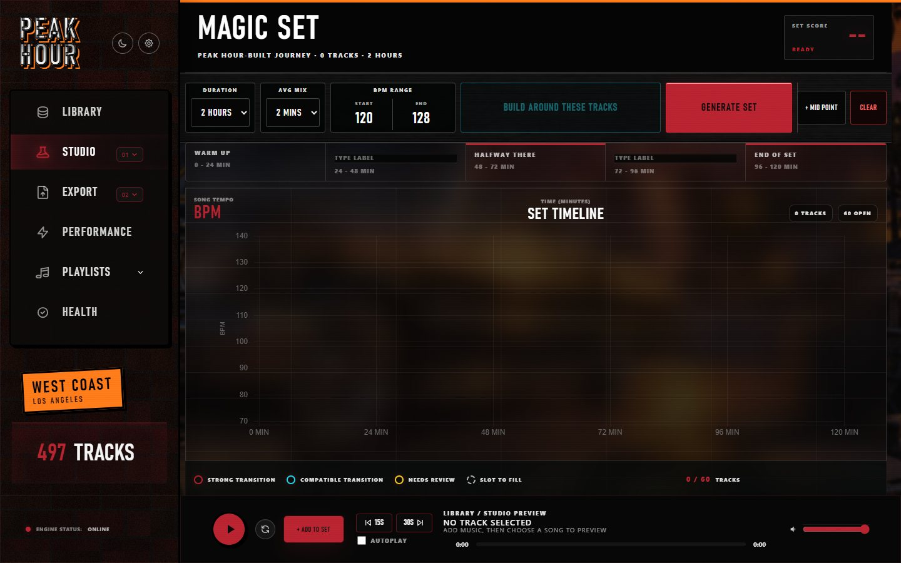
Studio DAW (mixtapes and edits)
Click Studio DAW in Studio, or the 01 menu next to Studio → Studio DAW / Open DAW Project. The DAW opens your set as a mix you can trim, line up and play. Export the mix as WAV or MP3 (320 kbps): Windows asks where to save, and you can add the finished mix to your library.
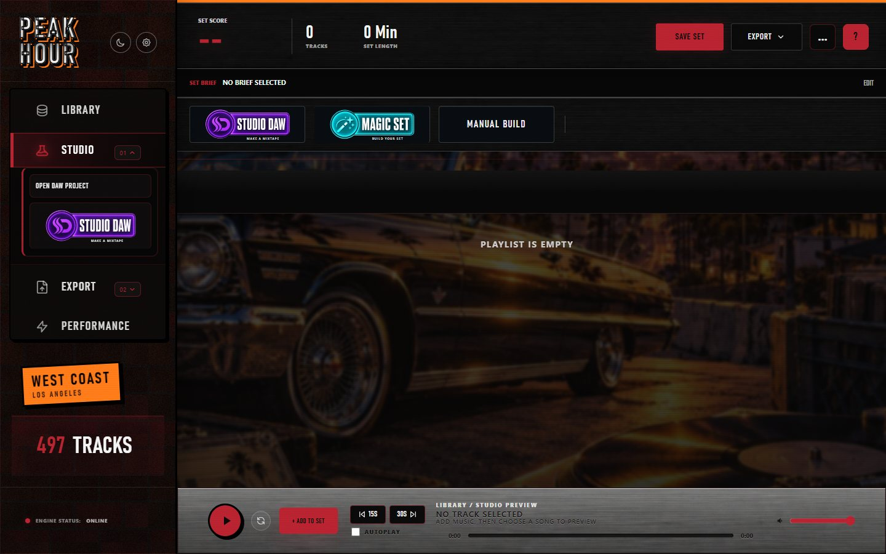
Sending sets to your DJ software
You can send the current Studio set from two places: the sidebar Export menu, or the Export button at the top of Studio.
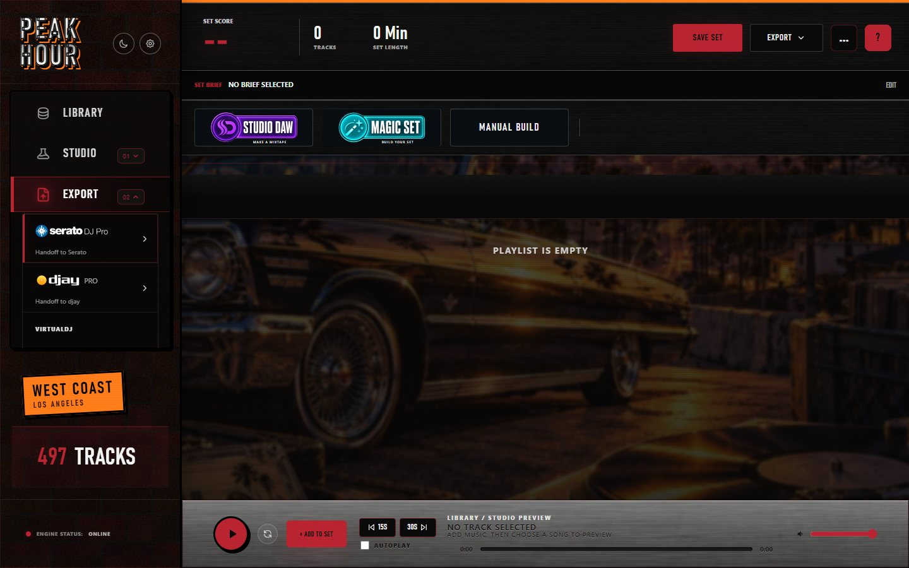
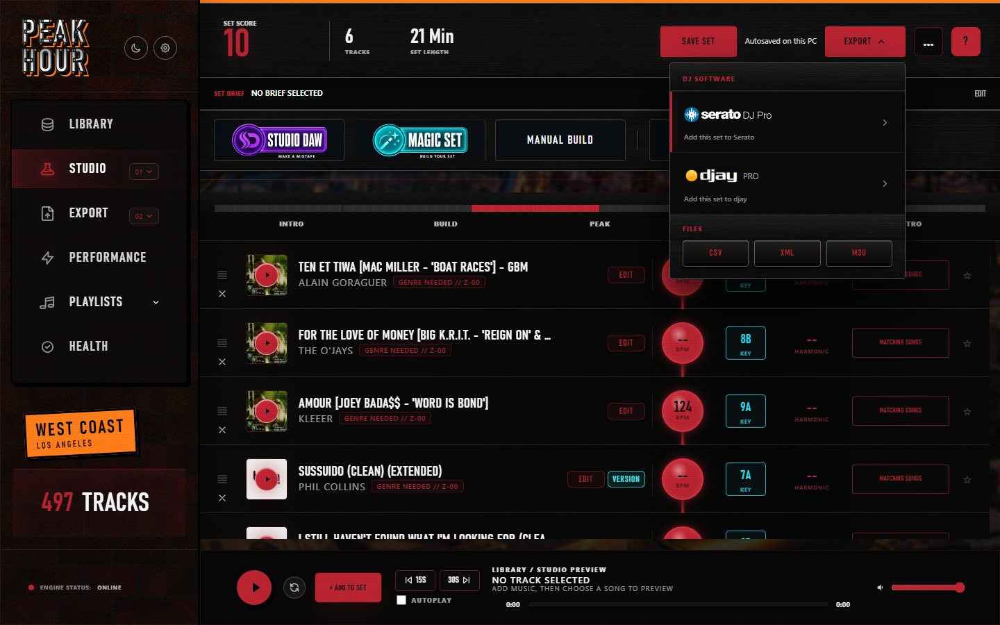
| Send to | How | Good to know |
|---|---|---|
| Serato DJ Pro | Handoff to Serato (or Add this set to Serato) | Close Serato first. PEAK HOUR backs up Serato's library, adds the crate, checks it and puts the backup back if anything goes wrong. |
| djay Pro | Handoff to djay | Only songs already in djay's collection can be added; PEAK HOUR tells you about any that aren't. |
| VirtualDJ | Handoff to VirtualDJ in the sidebar menu, or Export to VirtualDJ from a saved playlist | Creates a new list in VirtualDJ's MyLists. If a list with that name already exists, choose another name. |
| Files | CSV, XML, M3U | Save the set as a file for other software or for sharing. |
Afterwards PEAK HOUR can reopen your DJ software for you.
Back to top ↑Performance & Live Assist
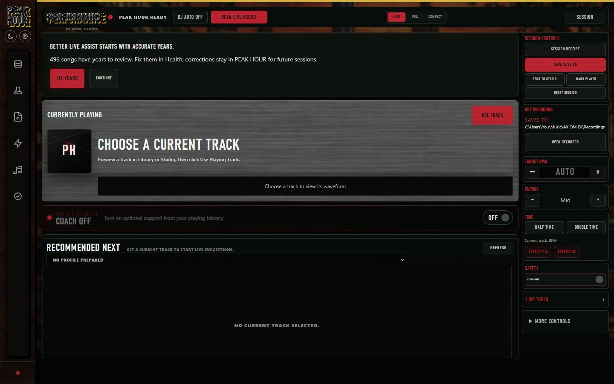
During a gig
- Open Performance and click DJ Auto Off so it reads DJ Auto On. While Performance is open, PEAK HOUR then follows the song playing in Serato or VirtualDJ. You can also preview a track in Library or Studio and click Use Track.
- Recommended Next lists songs that fit after it. Click Refresh for more.
- Steer the suggestions on the right: Target BPM, Energy (down, Mid, up), Time (Half Time / Double Time) and Safety → Clean only.
- Quiet Coach adds tips from your playing history when you turn it on.
- Session Controls: Mark Played, Send to Studio, Session Receipt (what you played), Save Session and Reset Session.
If many songs are missing years, a banner offers Fix Years: correct years make suggestions better.
Live Assist window
Open Live Assist opens a small window of suggestions you can keep beside your DJ software.
- Ctrl+F shortcut: with Settings → Workflow → Ctrl+F Shows Live Assist on, pressing Ctrl+F to search in Serato, VirtualDJ or djay brings Live Assist up beside it. Your typing still goes to the DJ software.
- Automatic Live Assist: when a new song starts playing, PEAK HOUR can open Live Assist and minimise itself.
Record your set
- Open Settings → Workflow → Set Recording.
- Choose what to record: the sound your DJ software plays (Serato, VirtualDJ, djay, rekordbox or Traktor), straight from Windows, or your controller or audio interface.
- Pick WAV or MP3, then click Test Signal to check the level.
- Start and stop recording from Performance → Set Recording → Open Recorder. Recordings are saved to the folder shown under Saves to.
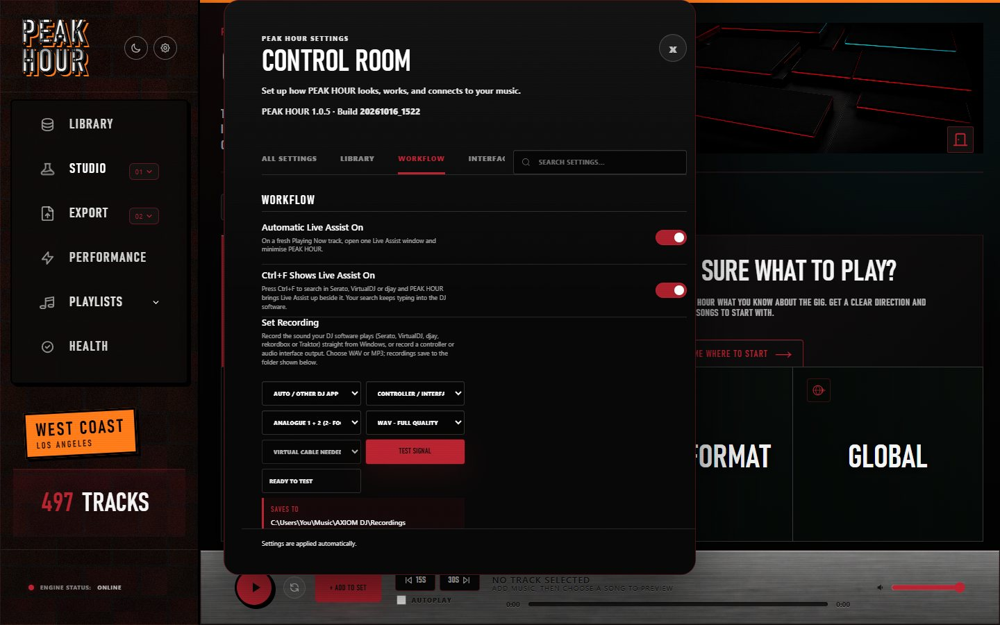
Playlists & favourites
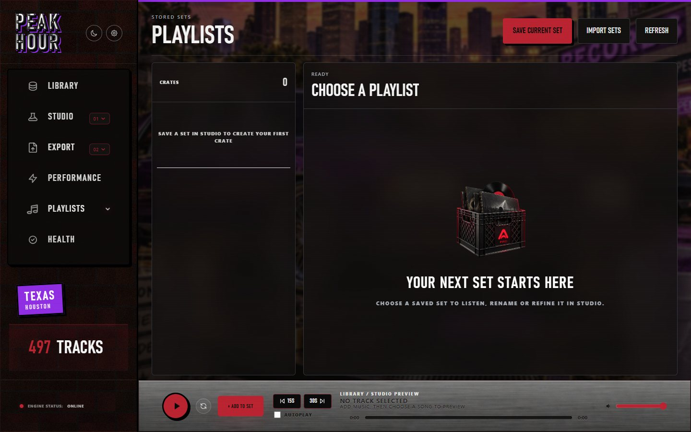
- Save Current Set saves the Studio set as a playlist.
- Click a playlist to listen to it, rename it, delete it (with Undo), open it in Studio or export it (including Export to VirtualDJ).
- Import Sets brings in sets saved from PEAK HOUR before. Refresh reloads the list.
- Playlists made by AI Assist appear here too.
The sidebar Playlists menu has two more tools:
- Build Set From CSV: turn a spreadsheet song list into a set.
- Favourites: every song you starred. From here you can Export to Serato or Clear All.
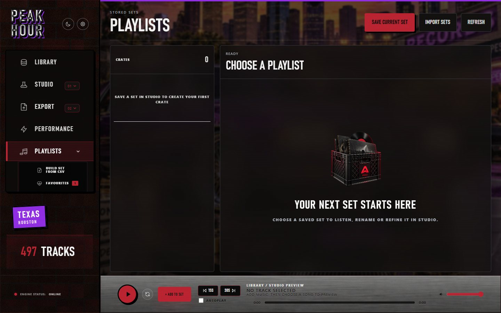
Library Health
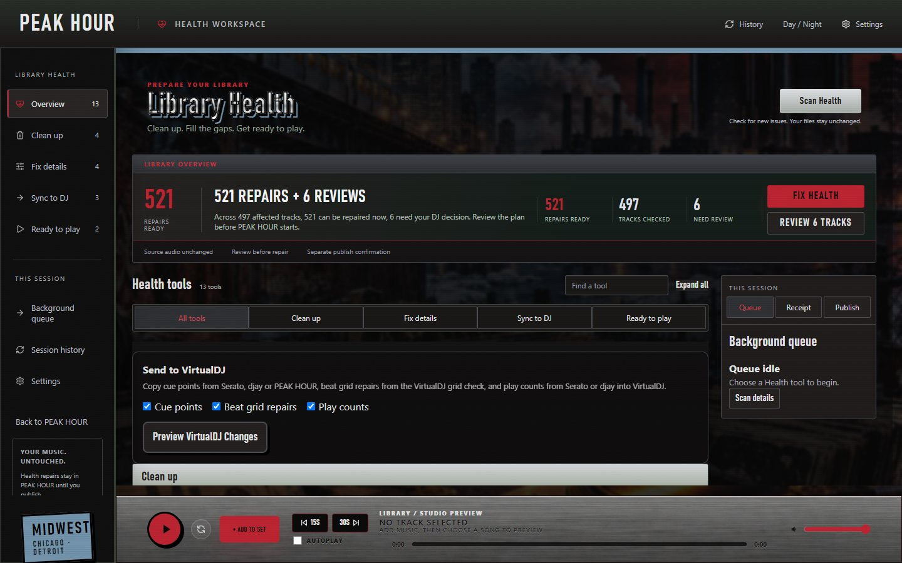
- Open Health and click Scan Health. Your files stay unchanged.
- The overview shows how many repairs are ready and how many songs need your decision.
- Click Fix Health to make the ready repairs, and Review N Tracks to decide on the rest.
- Repairs are saved in PEAK HOUR. To send them to your DJ software, use Sync to DJ (below) or the Publish tab.
Health opens with your last results at once, with Last checked and Refresh under the title. It counts your library again only when something changed (songs added, repairs made, a drive connected or removed), after a day, or when you click Refresh or Scan Health. Changes made to your files by other programs show up at the next Refresh.
The tools
| Group | Tools |
|---|---|
| Clean up | Library Detox (drops, stingers, samples and long mixes you may want to set aside; a Restore Bin brings them back), Duplicates + Organisation (removed duplicates go to the Windows Recycle Bin), Missing Files, Generated Storage. |
| Fix details | Metadata (tidy titles and artists), Fix Eras → Find Original Years (original release years instead of reissue dates), BPM + Key Vault, Beatgrid Doctor → Check Beatgrids for Serato, djay and VirtualDJ. |
| Sync to DJ | Send to VirtualDJ, Serato + djay Refresh, DJ Transfer (playlists, play counts, beat grids). |
| Ready to play | Audio Readiness → Check Audio (Windows audio and your output device), New Music Inbox (review and prepare newly added songs). |
Reconnect Music (songs whose files moved)
- If songs show as Missing Files because you moved them to another folder or drive, click Reconnect Music in Health.
- Click Choose folder or drive and pick where your music is now (a whole drive such as
D:\is fine), then Start. - PEAK HOUR looks through that folder and reconnects each missing song to the file with the same name. Songs keep their BPM, key, cues and playlists. Your music files are not changed, and a copy of your library is kept first (
library_cache.reconnect_backupin the PEAK HOUR data folder; the newest 3 are kept). - When it finishes you see how many songs were reconnected, how many could not be matched because the same file name exists in several places (these stay missing so nothing is linked wrongly), and how many are not in that folder. Run it again with another folder or drive for the rest.
Send fixes to VirtualDJ
- Close VirtualDJ.
- In Health → Sync to DJ → Send to VirtualDJ, tick what to copy: Cue points (from Serato, djay or PEAK HOUR, into empty cue slots only), Beat grid repairs and Play counts.
- Click Preview VirtualDJ Changes and read the list.
- Confirm to write. PEAK HOUR backs up VirtualDJ's database first, checks the result, and offers Undo until VirtualDJ saves again.
AI Assist (Claude or ChatGPT)
AI Assist lets Claude or ChatGPT suggest release years, tidy titles and artists, fill in genres and energy, and build playlists from songs you own. You review every suggestion; nothing changes until you apply it.
Open it from Settings → Library & Data → AI Assist → Open AI Assist.
1. Connect
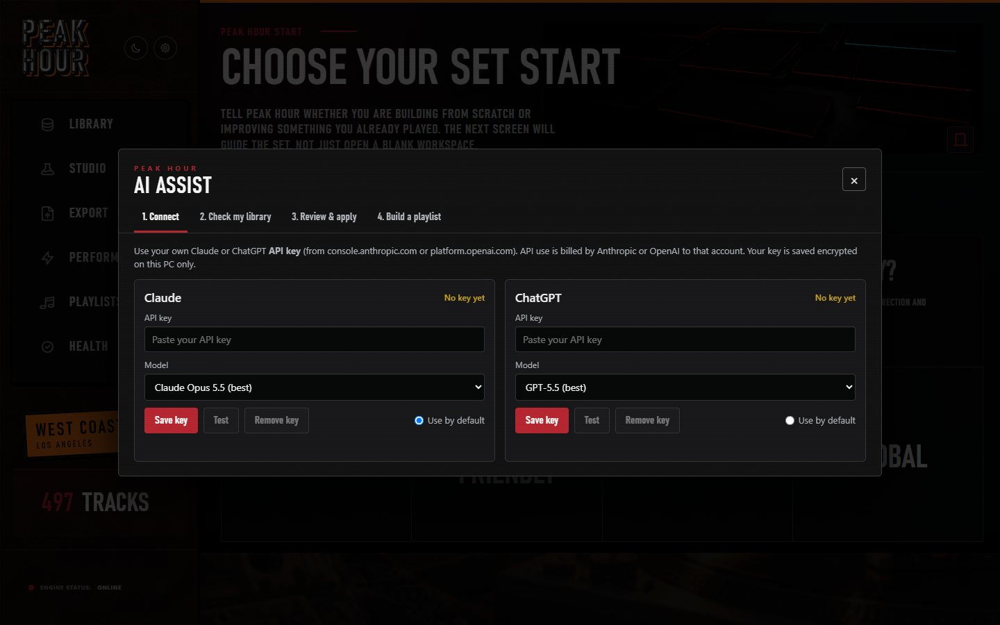
- Get an API key: for Claude at console.anthropic.com, for ChatGPT at platform.openai.com. Add some prepaid credit to that account.
- Paste the key into API key and click Save key. It is stored encrypted on this PC only.
- Choose a Model (the "best" one is most accurate; the "lowest cost" one is cheapest) and click Test.
- If you add both, pick one with Use by default.
2. Check my library
- Choose what to Check: Release years, Titles & artists, Genres or Energy.
- Choose Which tracks (Only the ones that need it or All tracks) and how many (Up to).
- Choose which AI to Use, then click Start. Songs are sent 40 at a time; you can stop at any point.
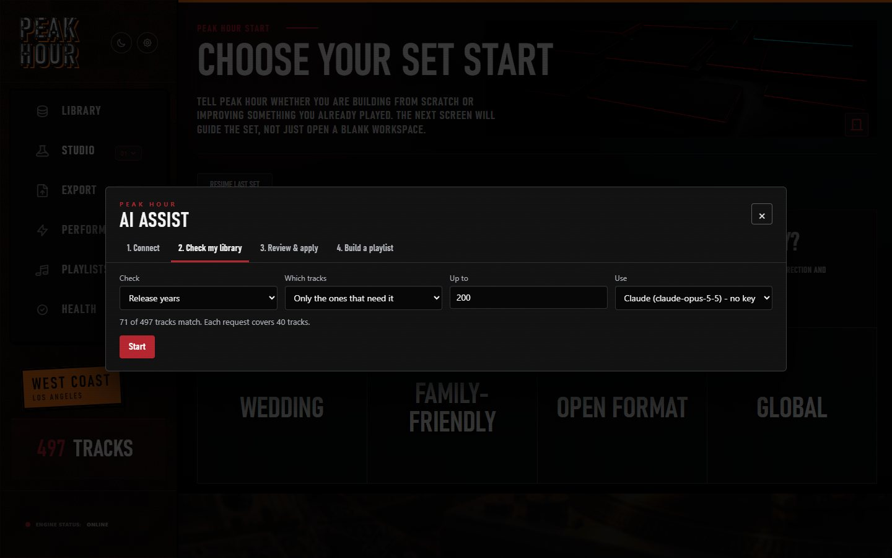
3. Review & apply
- Use Show to list suggestions Waiting for review, only High confidence ones, or All. Each row shows the song, what it has Now, the Suggested change, how Sure the AI is and Why.
- Tick the suggestions you agree with and click Apply ticked. The window shows "Saving X of N…" while it works. Use Skip ticked for ones you don't want.
- Changes are saved in PEAK HOUR only. Your music files and DJ software are not touched; publish from Health when you're ready.
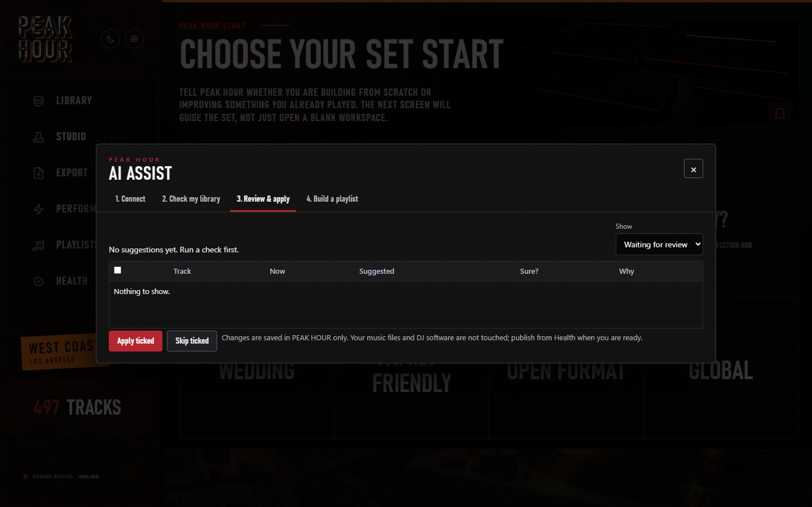
4. Build a playlist
- Describe the playlist, for example "90s East Coast hip-hop warm-up that builds into a peak, then 2000s club anthems".
- Set the number of Tracks, and optionally a BPM and Years range.
- Click Build playlist. The AI picks only from your own library and puts the songs in a playable order.
- Look over the list, then save it. It appears in Playlists.
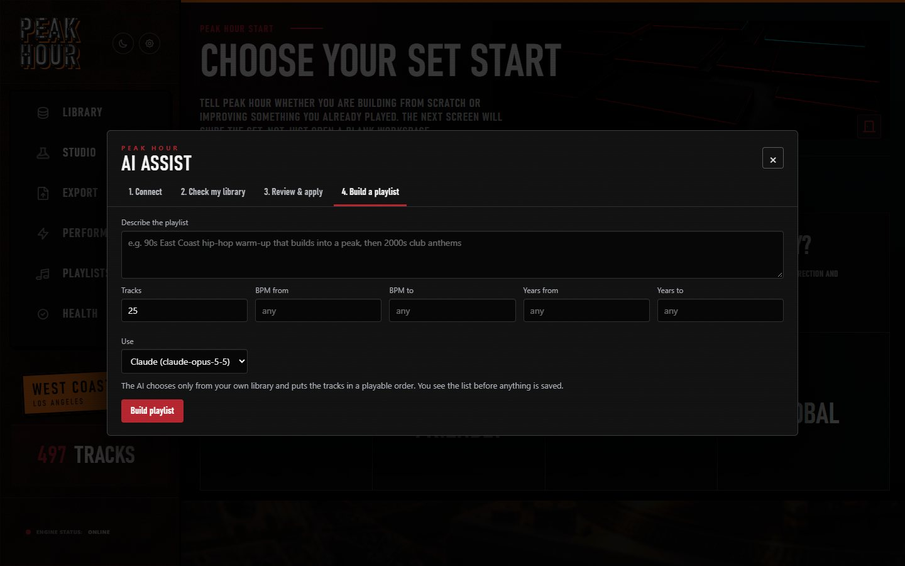
Other laptops
Other laptops on your home Wi-Fi can use PEAK HOUR running on your main PC, each with its own separate library. This is off unless you turn it on: start PEAK HOUR with the setting AXIOM_HUB=1 (set the environment variable AXIOM_HUB to 1 before you start PEAK HOUR).
- On the main PC, open Choose Music Source. The Other laptops card shows the address to use, such as
http://192.168.0.128:8080/, and a 6-digit pairing code. - On the laptop, open that address in Edge or Chrome, type the pairing code, and give the laptop's library a name.
- On the laptop, go to Library → Choose Music Source and upload that laptop's VirtualDJ or Serato database. The music files themselves stay on the laptop.
A pairing code works once and stops working after 10 minutes; the card then shows a new one. To use a library again after clearing the browser or on a new browser, pair again with a fresh code and type the same library name.
Only devices on your home network that have the pairing code can connect, and they can't change anything on the main PC. The connection is not encrypted, so use it only on a Wi-Fi network you trust.
Back to top ↑Settings
Click the gear button. Settings are applied as soon as you change them. Use the tabs (Library, Workflow, Interface, System) or the search box.
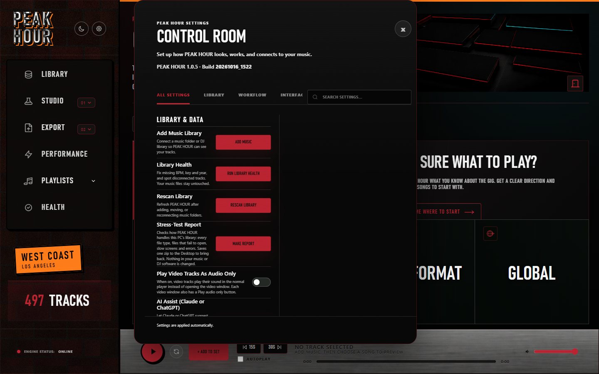
| Setting | What it's for |
|---|---|
| Add Music Library · Library Health · Rescan Library | See Adding your music and Library Health. |
| Stress-Test Report | Make Report checks how PEAK HOUR handles this PC's library (every file type, files that fail to open, slow screens, errors) and saves one zip file to the Desktop to send for support. Nothing in your music or DJ software is changed. |
| Play Video Tracks As Audio Only | See Video tracks. |
| AI Assist | See AI Assist. |
| Library Matching Songs | Show or hide the Matching Songs panel in Library. |
| Music Sources | Your record pools for missing tracks. PEAK HOUR opens them in your browser and never stores your login. |
| Dropbox Backup & Restore · Open Backups | Keep copies of your PEAK HOUR library information, playlists and unfinished sets. |
| Workflow | Automatic Live Assist, Ctrl+F Shows Live Assist, Set Recording, colour matching your DJ software, and where PEAK HOUR opens once your music is ready. |
| Interface | Where Matching Songs sits, and text size (− / +). |
| System | Artwork on/off, the add-to-set animation, a browser check, App Walkthrough, Open PEAK HOUR In (Edge or Chrome), User Manual (this page), and the installed version and build. |
Use Chrome instead of Edge
- Open Settings → System and find Open PEAK HOUR In.
- Choose Google Chrome (or Microsoft Edge to switch back). A browser that isn't installed on this PC is shown as (not installed) and can't be picked.
- Close PEAK HOUR and open it again. It now opens in a Chrome window, and Live Assist opens in Chrome too.
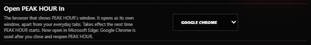
Troubleshooting
| Problem | What to do |
|---|---|
| "Windows protected your PC" when installing | Click More info → Run anyway. |
| Setup says "Close PEAK HOUR, then run Setup again." | Close PEAK HOUR (and any Live Assist window), then run Setup again. |
| Setup's black window seems frozen | If its title starts with Select, press Esc. Otherwise give it a minute; the progress bar moves in steps. |
| Import from a USB drive is slow | Large exFAT drives are slow to read the first time. Click Hide progress and keep working; leave the drive connected. |
| Songs show as missing after moving a drive | Settings → Rescan Library. |
| A video won't play | Click Play audio only, or wait for the conversion message to finish. |
| Serato export refused | Close Serato DJ Pro and try again. |
| AI Assist says no credit or rate limit | Add credit to your OpenAI or Anthropic account, or wait a minute and run the check again. |
| Something else looks wrong | Settings → Stress-Test Report → Make Report, and send the zip it saves on your Desktop. |
What's new
Newest first. This list grows with every update.
1.0.5 · 1 November 2026
- Reconnect Music now works on Windows: choose the folder or drive where your music is now and PEAK HOUR reconnects your missing songs by file name, even when they moved into different folders. It shows how many were reconnected and keeps a backup copy of your library first.
- Recording: a short audio glitch no longer fails a whole set; it is counted as a dropout and the recording is saved. Closing the PEAK HOUR window while recording now stops and saves the recording.
- Other laptops is now off unless started with
AXIOM_HUB=1, and each laptop pairs with a one-time 6-digit code shown on the main PC. - Safer duplicate clean-up: files on a USB stick, SD card or network drive (no Recycle Bin) are no longer deleted; PEAK HOUR says so and leaves them alone.
- AI Assist no longer says it is still working after PEAK HOUR was closed mid-check; it shows "Stopped when PEAK HOUR closed" and you can start again.
- Previews: M4A/MP4 audio starts playing at once instead of after a conversion, seeking and the progress bar no longer stall or crackle, and video previews no longer run out of slots ("Close an existing video preview first") after a few were opened.
1.0.5 · 31 October 2026
- Open PEAK HOUR in Chrome: Settings → System → Open PEAK HOUR In lets you use Google Chrome instead of Microsoft Edge.
- User manual: this guide, opened from Settings → System → User Manual.
- Faster video previews: most music videos start in about 3 seconds instead of about 50. New Play audio only button and an always audio only option.
- Type filter in Library: show all audio, all video, or one format such as MP3 or VOB.
- AI Assist with Claude or ChatGPT: release years, titles and artists, genres, energy, and AI-built playlists.
- Import window: clear two-step progress, and Hide progress now really hides it, leaving a small meter at the top.
- Big libraries: Health checks, track lists and the app itself are much faster on large USB libraries.
- Stress-Test Report in Settings.
- Setup: progress bar while unpacking, and no more freezing when the Setup window is clicked.
Earlier 1.0.5 builds
- Red-and-platinum PEAK HOUR look, with region stickers on each page.
- VirtualDJ: connect your library, beat grid check, send cues, grid repairs and play counts, export sets to MyLists.
- Other laptops on the home network, each with its own library.
- Windows versions of Mac-only features: File Explorer, Recycle Bin, Windows audio check, recording from DJ software, MP3 mix export, VST3 effects.